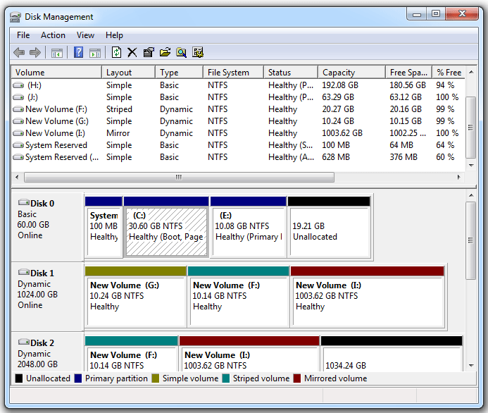

Although volume-based backup/restore has significant limitations: using volume backup in scenarios with low file system utilization will result in low copy storage space utilization. In scenarios where the backed-up files are generally large, file-level backup can achieve good performance and efficiently use storage space. However, volume backup also has advantages in specific scenarios: it is common in the field of forensic examination of host hard disks based on volume backup. Backup of the entire volume can achieve high backup/restore speed, and the system volume backup can directly restore the operating system. This article starts by introducing the basic concepts of volumes, summarizing several solutions for volume backup, recovery, and subsequent utilization of copy data on the Windows/Linux platforms. Based on the technical solutions mentioned in this article, the author has implemented a set of volume backup tools, achieving full backup and permanent incremental backup of volumes under Windows/Linux, as well as recovery and timely mounting of volume copies. The source code can be found at: https://github.com/XUranus/VolumeBackup, and this article can be considered as documentation for this project.
Basic Concepts of Volumes, Partitions, and Disks
Before describing the logic of volume backup/restore, let’s first introduce what a volume is because volume (Volume), partition (Partition), and hard disk (Hard disk) are often confused concepts. The hard disk is a physical concept, with commonly used hard disks such as Hard Disk Drive (HDD) and Solid State Disk (SSD), but this article does not go into detail about hardware. Volumes and partitions are both storage areas for data, similar but not the same: a volume is an accessible storage area with a single file system, and a partition is a part of a hard disk partitioned out. This means that a partition is often a specific concept, existing in a continuous specific area on a specific disk. A partition may not have a file system (typically an uninitialized RAW partition is also considered a partition). A volume, on the other hand, is an abstract concept that must be strongly associated with a single file system, and a volume may exist on one or more disks. Since a volume is a logical concept, it exhibits differences for Linux/Windows operating systems, and physical partitions are the basis for forming logical volumes, so to understand volumes deeply, we need to start with partitions.
Partition
Whether it’s Linux or Windows, hard disk partitioning uses GPT or MBR partition tables, and each disk supports only one partition table to define the disk layout. There are two types: MBR and GPT:
Master Boot Record (MBR): MBR is an older partitioning scheme commonly used on Windows, occupying the first 512 bytes of the disk header. Since MBR uses 32-bit addressing for logical block addresses, the address space is only $2^{32}$, resulting in a maximum space limitation of $2^{41}B = 2TB$ when calculated at 512B per block. MBR has limited support for the number of partitions, with a maximum of four primary partitions or three primary partitions with one extended partition. The system disk that uses MBR partitioning can only boot in BIOS (Legacy) mode.
GUID Partition Table (GPT): GPT is a newer partitioning scheme, occupying part of the space at the beginning and end of the disk and is expandable. GPT can overcome various limitations of MBR, supporting up to 128 primary partitions, and partition sizes can reach 9.4ZB. System disks using GPT as the partition table boot using EFI, requiring BIOS support for EFI (generally supported by modern computers).
Each partition allocated by GPT is considered a primary partition. MBR can allocate 4 primary partitions or 3 primary partitions and 1 extended partition, and on the extended partition, logical partitions (Logical Partition) can be further divided. Discussing primary partitions, extended partitions, and logical partitions generally applies to the Windows + MBR scenario:
- Primary Partitions: Up to 4. Requires assignment of drive letters and can be used as the system drive
C:\. - Extended Partition: Up to 1, which can contain several logical partitions.
- Logical Partition: Only used for storing data information, not for the system drive. Drive letters are not required to be assigned.

Volume
A volume is a more abstract concept built on top of partitions, a volume can occupy one or more partitions, and it can occupy different partitions not on the same hard disk, giving volumes a scalability that far exceeds partitions. Even if MBR only supports partitions up to 2TB, larger file systems can be created by spanning multiple partitions through volumes. Since volumes are a logical concept, their definition, implementation, and management vary across different operating systems.
LDM, Basic Disk, and Dynamic Disk
Windows introduces the concepts of Basic Disk and Dynamic Disk. For Windows, the significant difference between volumes and partitions is that partitions are created on Basic Disks, while volumes are created on Dynamic Disks. In Windows Disk Management, you can set a disk to be a Basic Disk or a Dynamic Disk: . Right-clicking on a disk allows you to convert a Basic Disk to a Dynamic Disk, and this conversion process is lossless. Conversely, converting a Dynamic Disk to a Basic Disk is not supported (requires third-party tools). The head and tail areas of a Dynamic Disk have specific metadata written to describe the partition layout to support more powerful scalability. Volumes created based on Dynamic Disks have the following types:
- Simple Volume: Occupies one partition on a disk. Simple volumes are the most common on PCs, created by right-clicking on a RAW partition in Windows Disk Manager.
- Mirrored Volume: Maintains data redundancy using copies located on two different hard disks. All write operations are performed on both disks separately, and read operations can be load-balanced between the two disks to improve performance. Mirrored volumes provide data resilience, ensuring data safety even when one disk is unavailable.
- Striped Volume: Also known as RAID 0, it creates a logical volume using partitions on two or more disks, and each write operation is performed on only one disk. This mechanism provides multiple channels, improving I/O throughput. However, Striped Volumes do not provide data redundancy, cannot achieve data resilience, and any disk failure leads to data loss, making it the least reliable type of volume.
- Spanned Volume: Merges partitions from multiple disks into a logical volume, with a sequential order among partitions. It increases volume capacity but does not provide data redundancy and cannot achieve data resilience.
- RAID-5 Volume: Uses three or more disks, consolidating the advantages of Striped, Spanned, and Mirrored Volumes. It maintains redundant copies of data and can quickly recover data after partial disk failure. It not only improves throughput but also expands volume space while providing data resilience.
Volumes on Windows are generally managed through LDM (Logical Disk Manager), which is based on the Basic Disk/Dynamic Disk mechanism. By writing specific metadata at the head and tail of the hard disk, LDM records the relationships between dynamic disks to form logical volumes.
Note: Whether it’s a Dynamic Disk or a Basic Disk, each has its partition table, and it is either MBR or GPT.
LVM and DeviceMapper
On Linux, volumes are generally managed through LVM (Logical Volume Manager). LVM provides capabilities such as creating LVM volumes from multiple block devices, managing volume groups, elastic resizing, snapshotting, etc. It relies on Linux’s DeviceMapper. DeviceMapper can create various logical volumes similar to several types on Windows: mirror, striped, linear (Windows’ Spanned Volume), RAID. Additionally, DeviceMapper can be used to implement the encryption layer of encrypted file systems. The usage of the CLI program dmsetup for DeviceMapper can be found in Appendix A. The Device Mapper.
Devices created by DeviceMapper have a path format like /dev/dm-X and are symlinked to /dev/mapper/$dmDevName.
/dev/dm-Xlooks like/dev/dm-0,/dev/dm-1, etc., and$dmDevNamein/dev/mapper/$dmDevNamerepresents a unique name for a DeviceMapper device. I/O requests for block device paths created by DeviceMapper are mapped to different target disk offsets by the DeviceMapper driver in the Linux Kernel according to user-configured rules (DM Table). The control information for creating/deleting devices is controlled by DeviceMapper forwarding to the control device/dev/mapper/control. Creating an LVM volume, such aslv1in volume groupvg1, will be mapped to/dev/mapper/vg1-lv1, and initializing the volume’s file system and creating logical volumes can be done by pointing to these virtually created logical block devices usingmkfs.
Retrieving Volume Information
The above discussion covered the basic concepts of volumes on Windows and Linux. At this point, readers should understand why the title is “Volume Backup” rather than “Partition Backup” or “Disk Backup.” To back up a volume, you only need to interact with the volume devices abstracted by the operating system, without needing to be aware of how the partitions constituting the volume are distributed on the disk. Volumes are strongly related to file systems, and volumes are the meaningful concepts that we actually need to back up. To back up a volume device means backing up the metadata of the volume (size, UUID, mount information, etc.) and the binary data within the volume. Next, let’s explore how to use platform-specific APIs to read volume information.
Using POSIX API to Read Linux Volume Information
On Linux, all devices are mapped as files under the /dev directory. /dev contains block devices, character devices, whether virtual or physical. SATA devices are mapped as /dev/sda, /dev/sdb, /dev/sdc, and so on. NVMe SSD devices are mapped as /dev/nvmen1, /dev/nvmen2, and so forth. Partitions within block devices are distinguished by appending a number to the end, such as /dev/sda1, /dev/sda2, and so on. LVM volumes or other volumes managed by DeviceMapper are stored under /dev/dm-X and linked to /dev/mapper/$dmDeviceName.
Volume devices on Linux are presented as block devices, supporting read and write operations based on offsets. Since Linux follows the principle of “everything is a file,” volumes can be treated as extremely large files for reading and writing—directly using the open(), close(), read(), write(), flush(), and lseek() interfaces provided by POSIX API. It is important to note that reading and writing to volume devices often require root group permissions. When performing backup operations, opening and reading the volume data in O_RDONLY mode can be done while the volume is mounted. However, when restoring volume data and opening it in O_RDWR mode to write volume information, the volume must be unmounted! Otherwise, an EACCES error will occur.
To obtain the size of a volume on Linux, the ioctl command with BLKGETSIZE64 can be used to read the size of the block device. Once the volume size is obtained, the data can be read and written in blocks.
Using Win32 API to Read Windows Volume Information
The NT kernel to some extent also inherits the design philosophy of “devices are files” from Linux. For example, devices such as hard drives and optical drives have their own device paths, such as the drive device \Device\PhysicalDriveX, disk volume device \Device\HarddiskVolumeX, snapshot volume \Device\VolumeShadowCopyX, and optical drive device \Device\CdRomX. The X represents an incremented number. Paths starting with \Device are DOS paths used only by the kernel, and user-mode programs generally use the soft links they map to, such as \Device\HarddiskVolumeX being mapped to \\.\HarddiskVolumeX. When calling Win32 API functions in user mode, it is essential to use user-mode device paths.
Windows does not have the concept of actively mounting. For volumes where common file systems (NTFS/FAT32/ExFAT) are present on Windows, as long as the device is connected, the file system will be automatically recognized. Volumes with recognized file systems can be accessed directly using the volume path regardless of whether they have obtained a drive letter. Whether to automatically obtain a drive letter is determined by partition properties. On Windows, FindFirstVolumeW() and FindNextVolumeW() can be used to enumerate all recognized volume names in GUID format. The corresponding device path for a volume name can be obtained using the QueryDosDeviceW() method. Reading and writing volume devices on Windows using Win32 API is similar to using POSIX API. The CreateFile() function is used to obtain the device handle for the opened volume path, and then the ReadFile() and WriteFile() functions are used to read and write the volume. Finally, the CloseHandle() function is used to close the handle.
The Win32 API provides the IOCTL_DISK_GET_LENGTH_INFO command for DeviceIoControl calls to get the size of a volume. Other information about the volume can be obtained using [GetVolumeInfomationByHandle()](https://learn.microsoft.com/en-us/windows/win32/api/fileapi/nf-fileapi-getvolumeinformationbyhandlew) (involving volume serial number, volume name, and other attributes).
Snapshots and Consistent Backups
Mounted volumes may be written to by other processes during the backup process, causing the generated volume copy to be inconsistent. In file backups, this inconsistency often manifests in some files having meaningless content in the copy. In contrast, the inconsistency in volume backup copies is fatal: it renders the entire volume copy data invalid. Therefore, there are two main approaches to ensuring consistency in volume backups:
Unmount the Volume: Unmount the volume associated with the file system before backing up the volume device. This method ensures that the data in the volume does not change during the backup process. This approach is commonly used in bare-metal backups. However, in a production environment, unmounting volume devices without interrupting business operations can be challenging. As a result, snapshots are used more frequently.
Volume Snapshot: Windows provides Volume Shadow Copy Service (VSS), and Linux’s Logical Volume Manager (LVM) offers snapshot capabilities, allowing the creation of a snapshot volume based on a particular volume. A snapshot volume is a type of logical volume, and during the actual backup process, data should be read from the snapshot volume and written to the copy to ensure the consistency of the volume copy.
Backup Engine Implementation
Previous sections introduced the basic concepts of volumes and the read/write interfaces, laying the foundation for the implementation of the volume backup engine. This section outlines the main processes of volume backup/restore, involving full backups, permanent incremental backups, and full restores. The reason for not implementing incremental backups is that the author believes that incremental copies of volumes do not add much value to data utilization. To mount a volume copy, a full copy needs to be restored first. Therefore, this section only discusses full backups and permanent incremental backups, while the restoration of copies only needs to consider full copies/synthetic full copies.
Scenario Description
The volume backup engine should support the following three scenarios:
- Full Backup: Read all data from the volume, write it to the copy file, and generate corresponding metadata for the volume data.
- Permanent Incremental Backup: Read all data from the volume, compare it with the data in the full copy, overwrite only the modified parts based on the previous full copy, generate a synthetic full copy, and create new metadata for the synthetic full copy for the next permanent incremental backup.
- Volume Restore: Read data from the volume copy and write it to the volume device.
The metadata includes basic information about the volume, such as size, mount point, device path, etc. To implement permanent incremental backups, the metadata also needs to include the checksum corresponding to the volume data on a block-by-block basis. For example, during backup, the volume is split into fixed-sized blocks (e.g., 4MB), and the SHA2 checksum for each block is calculated and stored. In the next incremental backup, the volume is split into blocks based on the block size used in the previous full backup, and the SHA2 for each block is calculated and compared. Only the blocks with changed SHA2 values are synchronously written to the new synthetic full copy. The choice of backup block size needs to balance performance and storage resource utilization.
Backup and Restore Engine
In summary, the volume backup/restore process is a rather simple read-write flow. During backup, data is read from the volume device and written to the file. During restore, data is read from the file and written to the volume device. Considering the logic of full backups and permanent incremental backups, only an additional hashing process is needed before read and write to generate a full SHA2 checksum file and compare the checksum of the previous blocks during incremental backups to decide whether to perform the write operation.
Therefore, the backup engine can consist of three components: Reader, Hasher, and Writer, responsible for reading data, hashing data, and writing data, respectively. The hasherQueue and writerQueue are used as blocking queues for communication between the Reader and Hasher, as well as the Hasher and Writer. After the Reader is started, it opens a volume or a copy file, and the main thread continuously reads data in 4MB chunks, pushing the data into the hasherQueue. The Hasher subscribes to hasherQueue, continuously pops data blocks, calculates the SHA2 checksum for each block, and if it’s an incremental backup scenario, compares the checksum of the block at the corresponding position in the previous full copy. If there is a difference, it is pushed to the writerQueue. If it’s a full backup or there’s no need for comparison, it is directly pushed to the writerQueue. After the Writer is started, it opens the volume or copy file, and the main thread subscribes to writerQueue, continuously pops data blocks, and writes them to the target location.
sequenceDiagram
participant Reader
participant Hasher
participant Writer
Reader->>Hasher: Read 4MB Data
Hasher->>Hasher: Calculate SHA2 checksum
Hasher->>Writer: Push Data to writerQueue (if different)
alt Incremental Backup
Hasher-->>Hasher: Compare with previous checksum
end
Writer->>Writer: Write Data
The volume recovery process involves only the Reader and Writer, utilizing the readQueue to communicate between them. Hasher and HasherQueue are not required.
The implementation of this process in VolumeBackup uses segmented backup in the form of a sliding window. Since a volume can be large, the backup time for a single volume can be lengthy. To address this, the backup task for a volume is split into multiple backup subtasks, allowing each subtask to back up a segment of the volume. Within a single subtask, checkpoints are recorded, enabling restart in case of subtask failure to enhance availability. Segmented backup also allows the segmented storage of meta and checkpoint files, facilitating loading into memory at once. When the replica type is set to CopyFormat::BIN, segmented backup generates replica files that are split into multiple sliced replica files based on the window size. This facilitates storing replica files on file systems with a single-file size limit, such as FAT32.
Volume Replica Mounting
The data of a backed-up volume often appears in the form of a disk binary image. To access and utilize the data, the volume needs to be mounted as a file system from the image. Therefore, mounting is a prerequisite for utilizing the data of a volume replica. The previously mentioned volume backup scheme involves segmented backup, resulting in one or more sliced replica files for a volume. Thus, the mounting solution for such replicas needs to support mounting from one or multiple sliced replica files. This chapter discusses the advantages and limitations of various mounting solutions for volume replica images on Windows and Linux.
Image Files
Commonly used disk image files for mounting include *.bin, *.iso, *.img, *.dmg, and similar formats. Among them, *.bin is a non-standard format without universally accepted specifications or a standard opening method (the sliced replica files generated by the backup engine mentioned earlier follow this format, using $start.$length.copydata.bin as the filename). The other three formats generally have defined standards and are supported by major operating systems. Before discussing volume replica mounting solutions, it’s essential to understand the practical definitions of these formats.
- ISO:
ISO files are typically images of optical discs and must adhere to the ISO 9660 or UDF format standards. ISO files have headers and data segments. ISO 9660/UDF should be treated as independent file systems. Clearly, this format of ISO files is not suitable for universal hard disk image mounting. On Windows, these ISO files can be mounted by double-clicking, assigning a drive label. Alternatively, they can be mounted using Win32 API calls like IOCTL_CDROM_LOAD_MEDIA_IOCTL. On Linux, the files can be mounted usingmount -o loopormount -t iso8660.
There are also ISO files that do not adhere to the ISO 9660/UDF format standards. They may be sector-by-sector copies of the disk. Windows does not support directly mounting these files; third-party tools like ImDisk are needed. These sector-by-sector copy files should actually be classified as IMG files.
- IMG:
IMG format is generally a sector-by-sector copy of the entire disk, providing a complete description of the volume’s information. Windows typically requires third-party software to mount these files. Mounting IMG files is common in electronic forensics scenarios. Mutiple Ways To Mount Raw Image Windows introduces several third-party mounting tools for these files, such as OSFMount, Arsenal Image Mounter, ImDisk, and others.
On Linux, mounting such files can be done by first creating a loop device using losetup and then using the mount command to specify the file system type and other mounting parameters for the corresponding loop device. For example:sudo mkdir /mnt/imagemount
sudo losetup $(losetup -f) /path/to/imagefile.img # bind /dev/loopX to imagefile.img
sudo mount -t ext4 -o ro /dev/loopX /mnt/imagemount # specify fs type, mount option, loop device, and image path
- DMG:
As a common image format on MacOS, DMG is only supported on MacOS.
Mounting Solutions
By comparing the differences between various common image files, we can conclude that the volume replicas generated in our volume backup, containing any file system, are closer to the IMG format. For such sector-by-sector copy files, Linux can use the loopback device driver for mounting, while Windows requires alternative solutions, such as the introduction of third-party tools like ImDisk.
Due to the introduction of the concept of slices in our volume replicas (a volume replica consists of one or more fragments that save different positions of the volume), our mounting process becomes more complex. Next, we will compare the advantages and disadvantages of several volume replica mounting solutions on Linux and Windows in this context.
Linux Mounting Based on loopback Device/devicemapper
On Linux, replica files can be associated (attached) with a loopback device. The loopback module will bind a /dev/loopX block device path (where X is a number) to each associated device, and this device path can be used for subsequent mounting. If the replica contains only one image file, and that unique image file contains the entire volume, it can be mounted directly:
sudo mkdir /mnt/imagemount |
Here, losetup -f is used to return an available loopback device path, such as /dev/loop0. sudo losetup /dev/loop0 /path/to/imagefile.bin associates imagefile.bin with /dev/loop0, with the default sector size being 512B. All I/O to /dev/loop0 will be mapped to the associated imagefile.bin file.
If the replica consists of multiple image files, for example, a 3GB replica is split into 3 slices of 1GB each, stored as:
/path/to/imagefile.0.1073741824.bin |
imagefile.0.1073741824.bindenotes a length of 1073741824 bytes starting from 0, andimagefile.1073741824.1073741824.bindenotes a length of 1073741824 bytes starting from 1073741824, and so on.
Linux provides the devicemapper driver to create logical devices, where the ability to create a linear device can be used to create a spanned volume across multiple volume devices. For the aforementioned replica composed of three files, each can be mounted as separate loopback block devices: /dev/loop0, /dev/loop1, /dev/loop2. Each device has 1073741824B / 512B = 2097152 sectors. Using the dmsetup command-line tool, a linear target device can be created with the dm-sample-tbl.txt file describing the start sector, sector count, type (linear), block device path, and target block device’s start sector for each mapping target block device:
0 2097152 linear /dev/loop0 0 |
Then, use dmsetup create sample-volume dm-sample-tbl.txt to create a dm volume named sample-volume. If successful, a device with the path /dev/mapper/sample-volume will be created under /dev/mapper. Afterward, this device can be mounted using the mount command.
graph TD
subgraph Volume Copy
A[Check Number of Image Files]
B[Is there only one image file?]
C[Attach Image File to Loop Device]
D[Mount Loop Device]
E[Done]
F[Attach All Image Files to Loop Devices]
G[Create Linear DM Device]
H[Mount DM Device]
end
A -->|Yes| B
B -->|Yes| C
C --> D
D --> E
B -->|No| F
F --> G
G --> H
H --> E
Mounting Solutions
In the AOSP source code, examples of creating, deleting, and finding devicemapper volumes using the user-space API in dm-ioctl.h are provided. You can refer to the code at https://android.googlesource.com/platform/system/core/+/refs/heads/main/fs_mgr/libdm.
Mounting volume replicas on Linux using loopback devices and devicemapper allows for in-place mounting with zero copying. This can be considered a relatively ideal mounting solution.
Windows Mounting Based on VHD
On Windows, only images that comply with ISO 9660/UDF standards can be directly mounted. Other images can only be mounted directly in the form of Virtual Hard Disk (VHD) files. VHD/VHDX is a virtual disk technology provided by Windows for creating virtual disks from files, similar to the loopback device in Linux. However, compared to the loopback device, both VHD and VHDX have additional headers and footers used to record disk metadata (size, version, etc.). VHD/VHDX supports fixed-length volumes or dynamically sized volumes. Fixed-length volumes allocate space on the disk when creating the VHD/VHDX file, while dynamic volumes only create a portion of the space initially and expand the file size as needed based on subsequent writes. Dynamic disk files, in addition to basic Header/Footer, also require maintaining a block allocation table, making them have a more complex file structure.
VHD format is not supported by Linux, and the dynamic disk file format cannot describe the original volume information sector-by-sector. Therefore, it cannot be used as a cross-platform replica storage solution. VHD can be used for older Windows versions, supporting a maximum volume size of 2040GB. VHDX files are supported after Windows Server 2012, with a maximum volume size of 64TB and a more complex file structure. VHD files also do not support slicing, so a new VHD/VHDX file needs to be created from the replica slice before mounting, resulting in 1x additional space consumption.
The article Splitting a Virtual PC VHD mentions that VHD slicing (naming as
.v01,.v02, etc.) is only suitable for scenarios where Hyper-V virtual machines are read and cannot be used for general host mounting.
VolumeBackup uses the approach of backing up Windows volumes into VHD and VHDX formats. VirtDisk.h provides APIs for operating on VHD/VHDX. The process of writing data to a virtual disk file is as follows:
- Use
CreateVirtualDisk()to create a virtual disk file, specifying the disk size and type (dynamic or fixed-length). In reality, the disk size needs to be larger than the volume’s size to reserve space for GPT/MBR partition tables. Additionally, GPT-formatted disks in Windows require creating a Header MSR (Microsoft Reservation) partition and a 2MB reserved partition at the end of the disk. - Use
OpenVirtualDisk()to open the virtual disk file and obtain the handle. Then useAttachVirtualDisk()to load the dynamic disk. At this point, the virtual disk will be assigned a disk device path\\.\PhysicalDriveX. - Open the disk based on the disk device path, obtain the disk handle, use
IOCTL_DISK_CREATE_DISKto initialize the disk as a GPT format, and useIOCTL_DISK_SET_DRIVE_LAYOUT_EXto initialize the MSR and replica data partitions. Upon success, the replica data partition will be automatically mounted and assigned a volume device path\\.\HarddiskVolumeX. - Use
CreateFile()to open the volume device path and obtain the volume device handle, allowing regular file I/O for reading and writing to the volume device. After reading and writing are complete, useDetachVirtualDisk()to unmount the virtual disk.
The process of recovering data from VHD/VHDX format replicas is similar; just attach the virtual disk using AttachVirtualDisk() and obtain the replica volume device path.
The partition format of GPT virtual disk replicas used by VolumeBackup is as follows:
In practical testing, fixed-length VHD/VHDX disks are created without size limitations. The terms “VHD 2040GB” and “VHDX 64TB” apply only to dynamic disks. Therefore, using VHD/VHDX format replicas for storing Windows volume replicas is a feasible backup solution. After initializing the GPT partition using
IOCTL_DISK_CREATE_DISK, asleepof a few seconds is required before executingIOCTL_DISK_SET_DRIVE_LAYOUT_EXto successfully initialize all partitions. This part of the MSDN documentation is not very clear, and the author has not found a solution: When specifying a GUID partition table (GPT) as the PARTITION_STYLE of the CREATE_DISK structure, an application should wait for the MSR partition arrival before sending the IOCTL_DISK_SET_DRIVE_LAYOUT_EX control code. For more information about device notification, see RegisterDeviceNotification. https://learn.microsoft.com/en-us/windows/win32/api/winioctl/ni-winioctl-ioctl_disk_create_disk
Windows Mounting Based on ImDisk
For Windows, a mounting solution that does not require copying the replica and is not constrained by the replica’s size seems to be limited to the use of third-party tools, with ImDisk being one example. By reading the ImDisk source code, it is evident that ImDisk registers a driver in the Windows kernel to create a virtual disk. The driver translates all I/O requests to this virtual disk into corresponding file I/O requests, similar to implementing a loopback device on Windows. However, since writing a driver involves kernel development and any slight mistake could lead to a production environment crash, this solution is not recommended.